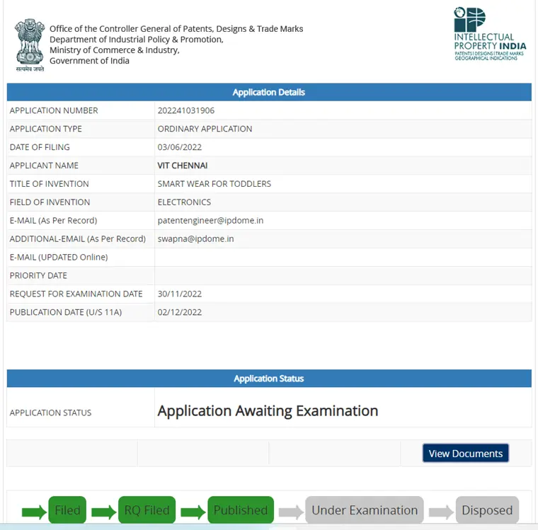
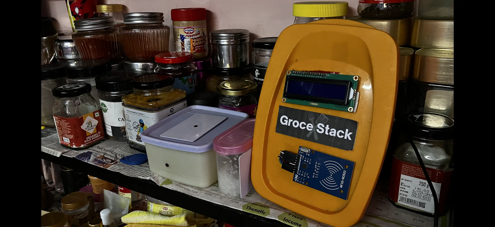
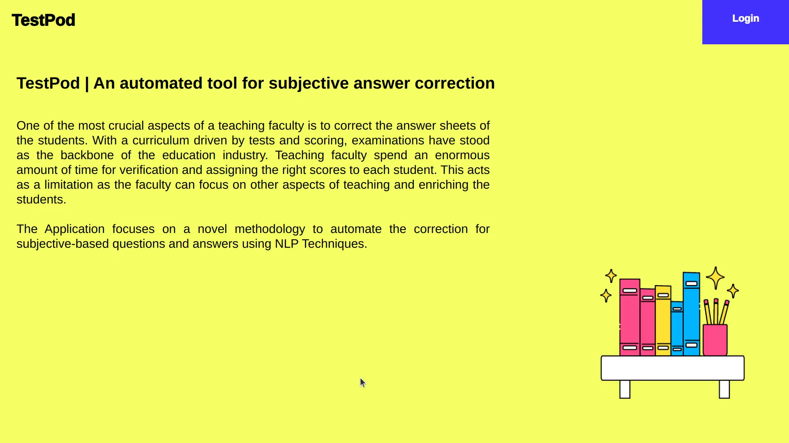
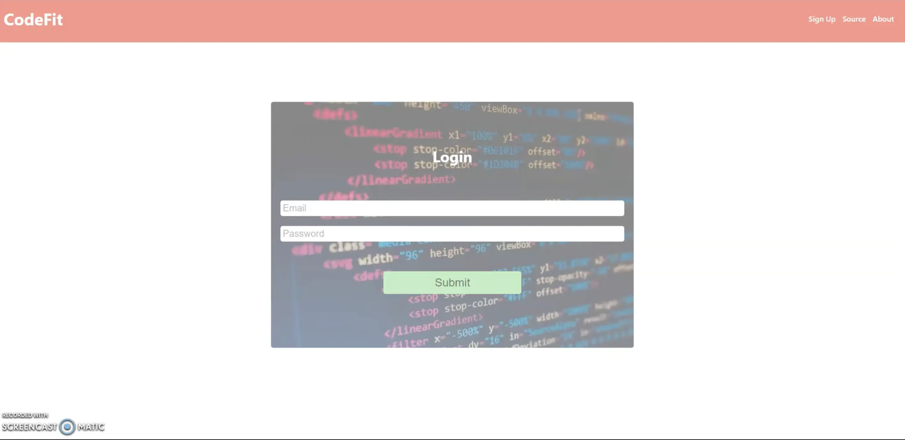
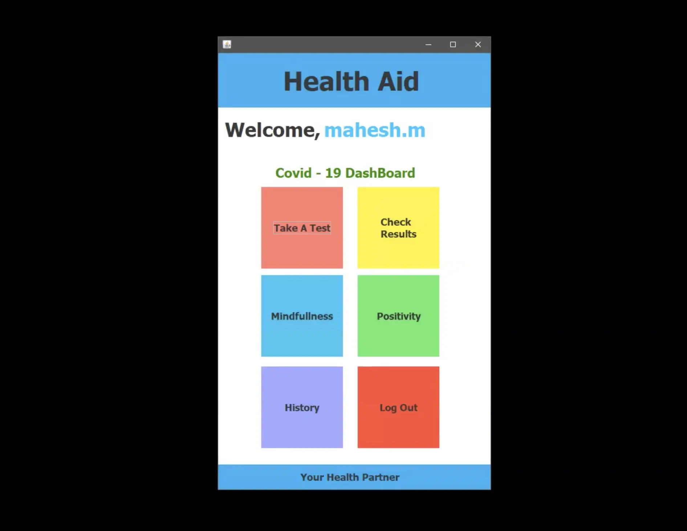

Patents
Smart Wear For Toddlers
The product focuses on creating a solution to prevent toddlers from falling into the trap of being a victim of sexual child abuse. The mentioned problem is resolved by real-time tracking of the bloomer, giving extensive control to the
parents in setting the relaxation time of the bloomer, and complete transparency and the network status of the bloomer.
The USP of the proposed idea is real-time tracking of the toddler, the Number of loo breaks by the toddler, and variable relaxation time provided to the parents.
Tech Stack | ESP8266, Embedded C++
IoT Solutions
Smart Organiser for Dry Groceries
Smart organizer for dry groceries is an IoT-based architectural solution to organize dry groceries in the kitchen based on the days until expiry to avoid food-borne diseases due to consumption post-expiry date. The proposed system has
two components, the IoT device, and a web console.
The lid of the grocery container has an RFID tag to uniquely identify the container and read by the device to fetch the required details. The proposed device displays information
regarding the grocery, such as the name of the grocery, manufacturing date, days until expiry, and estimated quantity leftover in the container. The backend is a real-time database hosted in the cloud, which acts as a centralized repository
for the IoT device and web console. The web console assists in fetching the required information about the grocery to the cloud-based backend.
Tech Stack | ESP8266, Embedded C++
Web Applications
TestPod | Automated Evaluation Of Essay-Based Questions Based On Natural Language Processing (AI)
One of the most crucial aspects of a teaching faculty is to correct the answer sheets of the students. With a curriculum driven by tests and scoring, examinations have stood as the backbone of the education industry. Teaching faculty spend an enormous amount of time for verification and assigning the right scores to each student. This acts as a limitation as the faculty can focus on other aspects of teaching and enriching the students. The Application focuses on a novel methodology to automate the correction for subjective-based questions and answers using Natural Language Processing and Machine Learning Techniques.
Tech Stack | Spring MVC, JSP & JSTL, Apache Open NLP, SQL
CodeFit | Interview Assist Portal
CodeFit focuses on improving the niche skills of every aspiring engineer through a specialized portal to enhance their ability to get selected in an interview process. It works on a goal basis, which motivates the aspirant to work harder every day toward their goal.
Tech Stack | Core & Advanced Java, JSP, Servlets, SQL
Desktop Applications
Health Aid
Health Aid Health Aid is a smart diagnostic tool that can diagnose/identify the possible health conditions the person may have or is likely to possess in the near future. A framework/database is built with all the common health conditions and possible symptoms. The software gets input from the user like height, weight, gender, age, lifestyle, food intake, and much more.
Tech Stack | AWT, Swing, Core Java, H2 Database
Registration Of Non-Transport Vehicles

The software is a digitalization of the renewal of the non-transport vehicle. The owner of the Non-transport Vehicle like Personal cars (White Board number plate vehicles) and Motor Cycles should apply for renewal of the Registration Certificate (Fitness certificate - FC) after Completion 15 years from the date of original registration. The registration should be renewed 60 days after the expiry of the registration after paying the green tax. The validity of Registration for Non-transport vehicles will be 15 years. The system focuses on being a consistent and reliable platform to renew the vehicle.
Tech Stack | AWT, Swing, Core Java, H2 Database